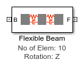
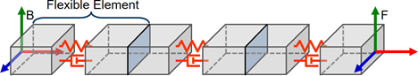
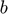
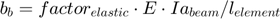
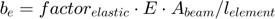
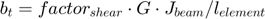
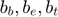
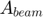
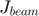
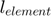

Flexible Beam from Lumped Parameters
Models a flexible beam based on lumped parameter method. Number of flexible elements, material properties as well as beam cross section and dimensions can be varied from mask parameters.
Contents
Model
Diagram
The following diagram shows the generic structure of the beam represented by these blocks. A chain of flexible elements connects frames B and F which are the ports of the block. The number of elements can be varied, as can the degrees of freedom permitted by the spring-damper within each flexible element.

Parameters, Tab Material
Material: Define the material properties of the beam. Exact values can be provided or standard values for common materials can be selected.
- Custom - Provide exact values for relevant material properties.
- Steel - Use standard values for steel, which are shown in the dialog box.
- Many other standard properties can be selected
These parameters are needed to calculate solid and deflection properties of the beam
- Material Density: Density of the material
- Modulus of Elasticity: Young's Modulus of the material
- Shear Modulus: Shear Modulus of the material
Damping: Specify damping for the beam. Damping is specified by two damping factors. This parameterization enables the damping to scale with the dimensions and material used in the beam.
- Elastic Damping Factor: Damping factor for bending and elongation
- Shear Damping Factor: Damping factor for torsion
The damping coefficient  used in the flexible elements is calculated according to the following formula:



Where
 = Damping coefficient for bending, elongation, and torsion
 = Area moment of inertia
= Area moment of inertia
 = Cross sectional area of beam
 = Torsional constant for beam
= Modulus of Elasticity
= Shear Modulus
 = Length of flexible beam element
Print internal values to Command Window: Prints internal values to MATLAB Command Window. Resulting values can be inspected to verify that provided parameters are correct. An example of the printed values is shown below.
Value Units
__________ _______________
Area Moment of Inertia, Ixx 0.0026121 {'m^4' }
Area Moment of Inertia, Iyy 0.0026121 {'m^4' }
Torsional Constant, J 1.5625e-09 {'m^4' }
Cross sectional area, A 7.5e-05 {'m^2' }
Flexible element length 0.03 {'m' }
Element Stiffness, Bending about Z 1.7414e+10 {'N*m/rad' }
Element Stiffness, Bending about Y 1.7414e+10 {'N*m/rad' }
Element Stiffness, Torsion about X 4020.8 {'N*m/rad' }
Element Stiffness, Elongation along X 5e+08 {'N/m' }
Element Damping, Bending about Z 4.494e+05 {'N*m/(rad/s)'}
Element Damping, Bending about Y 4.494e+05 {'N*m/(rad/s)'}
Element Damping, Torsion about X 0.012971 {'N*m/(rad/s)'}
Element Damping, Elongation along X 12903 {'N/(m/s)' }
Parameters, Tab Geometry
Cross-Section Type: Select the cross-section type for the beam. Exact values can be provided, or some standard shapes can be used.
- Hollow Rectangle - Define cross-section as a hollow rectangle. Selecting this option exposes parameters for defining the inner and outer dimensions of the hollow rectangle. The inner dimension can be set to zero in order to define a solid rectangle. Area moments of inertia, polar moments of inertia are calculated automatically. Note: torsion constant calculation assumes thickly walled cross section. See code if you wish to verify formula used.
- Hollow Circle - Define cross-section as a hollow circle. Selecting this option exposes parameters for defining the inner and outer diameters of the hollow circle. The inner dimension can be set to zero in order to define a solid circle. Area moments of inertia, polar moments of inertia, and torsion constant are calculated automatically. Note: torsion constant calculation assumes thickly walled cross section. See code if you wish to verify formula used.
- Custom - Specify the exact properties of the cross-section. Selecting this option exposes parameters for defining the area moments of inertia, polar moments of inertia, torsion constant, and the extrusion data.
Length: Overall length of the beam
Number of elements: Number of flexible elements used to construct the beam. A higher number of elements typically results in higher accuracy but longer computation times.
Color: 3-vector with values between 0-1 defining color of rigid body solid [RGB]
Opacity: Scalar value between 0-1 defining opacity
Parameters, Tab Flexibility Type
Flexible Element Degrees of Freedom: Select the number of degrees of freedom permitted by the spring-damper element in each flexible element.
- Rotation: Z - Permits one rotational degree of freedom in the flexible element along the z-axis.
- Rotation: X, Y, Z; Translation: X - Permits three rotational degree of freedom and one translational degree of freedom along the x-axis.